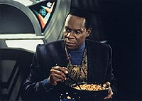
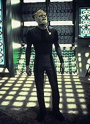
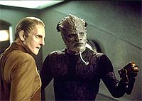
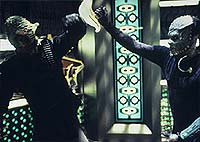
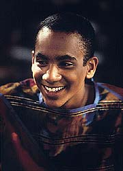

MANCHETE
DO EPISÓDIO
Episódio
fraco estabelece as bases da
fisiologia dos soldados do Dominion
Episódio
anterior | Próximo
episódio
Sinopse:
Data Estelar:
desconhecida.
Jake Sisko está sentado em uma
mesa do Quark´s, observando sua namorada Bajoriana Marta, uma
garota Dabo, trabalhar. Marta, após ajudar a interromper a maré
de sorte de um certo Okalar, vai à mesa de Jake e diz que está
pronta para "O" jantar com ele e o pai dele, na noite
seguinte, algo que surpreende o rapaz, pois foi o próprio
comandante que a convidou.
A capitã de cargueiro Boslic (velha conhecida de Quark) oferece
ao Ferengi alguns destroços, que ela recuperou de uma nave
desconhecida acidentada no quadrante Gama, em troca de Latinum.
Quark inspeciona o entulho, amontoado em um hangar de carga, e
fica feliz com o negócio feito, até encontrar um bebê alienígena,
dentro de uma espécie de incubadora (na realidade uma câmara de
estase).

Sisko
está furioso por Quark ter "comprado um bebê" e o
bartender sai "de fininho" deixando o bebê e os destroços
aos cuidados do comandante e seus oficiais. A capitão do
cargueiro Boslic também partiu e desapareceu. Bashir diz que o
bebê é saudável, com um metabolismo extremamente acelerado,
apesar de não conseguir identificar a sua espécie. Dax diz que
vai contatar os orfanatos de Bajor. Segurar o bebê deixa Ben
saudoso de quando Jake tinha tal idade. De volta aos seus
aposentos, Jake diz ao comandante que o jantar com Marta o pegou
de surpresa, mesmo tendo sido idéia dele em primeiro lugar, algum
tempo atrás.
Na manhã seguinte, Sisko volta à enfermaria e encontra o
"bebê", agora como um garoto de uns oito anos (apesar
de Bashir estimar uma idade real de apenas duas semanas), já com
fala e habilidades cognitivas bem desenvolvidas. Bashir desconfia
que o garoto é fruto de (extremamente avançada) engenharia genética.
O'Brien continua examinando os destroços e Sisko diz a ele que não
vê com bons olhos o namoro de seu filho com Marta.
Kira leva um arranjo de planta para Odo em seus novos aposentos.
Odo instalou peças de mobília especiais para exercitar as suas
habilidades de transmorfo e agora não usa mais o seu balde (que
serviu para vaso da planta), se regenerando sobre tais objetos em
qualquer lugar do seu quarto.
Enquanto isso, Bashir confirma sua suspeita inicial e além disso
descobre que o garoto não tem uma enzima fundamental para a sua
sobrevivência. O doutor é chamado à enfermaria; o garoto, agora
um adolescente, fugiu e está provocando uma anarquia no
Promenade. Odo ordena que ele pare e ele o faz de forma
referencial (aparentemente também uma característica
geneticamente implantada). Ele é um jovem Jem'Hadar.

A
Frota Estelar quer o Jem'Hadar imediatamente para estudo. Odo se
sente incomodado pelo que os Fundadores fizeram com todos os
Jem'Hadar e também porque a Frota vai transformar o
"garoto" em um mero espécime de laboratório (posição
que ele conhece muito bem). Ele quer que o Jem'Hadar tenha um
destino diferente dessas duas opções. Sisko deixa Odo cuidar do
Jem'Hadar por ora e diz que vai protelar a Frota com uma história
de "testes adicionais". Odo quer saber se ele é somente
uma "máquina de matar sem livre arbítrio" ou não.
O comissário ajuda Bashir a fazer novos testes no Jem'Hadar, para
pesquisar sobre a tal enzima e Odo tenta atender as necessidades
imediatas dele ("eu quero lutar", mas não com o comissário,
diz o Jem'Hadar). O jantar entre Marta, Jake e Ben vai bem, Sisko
vai com a cara de Marta e aprende que Jake joga Don-Jot e escreve
poesia.
O'Brien acha uma reserva da citada "enzima" nos destroços
e Bashir implanta um aparelho para administrá-la. O Jem'Hadar se
sente ótimo e vai com Odo para os aposentos do comissário.
O Jem'Hadar está curioso com as habilidades mutantes de Odo e,
apesar dos esforços contrários do comissário, tem certeza que
Odo não pode errar. O Jem'Hadar quer saber mais sobre o seu povo,
quer respostas. Odo diz que tais "respostas" nem sempre
são as esperadas e exibe o vídeo do ataque dos Jem'Hadar à
ponte da Defiant e o jovem Jem'Hadar fica fascinado com a ação.
Odo diz que ele pode evitar tal destino canalizando o seu instinto
de violência de outra forma. Odo o introduz a um programa de luta
em uma holo-suíte, que Odo indica como um "lugar para
extravasar" e que em contrapartida ele tem que se conter no
mundo real. Kira chega na holo-suíte e chama Odo para conversar
do lado de fora. Kira não sabe por que Odo está insistindo com o
Jem'Hadar (e teme que ele não consiga controlá-lo por muito
tempo).
Odo diz que ele merece uma chance de provar ser algo diferente do
que ele nasceu para ser, apesar de Kira achar que o comissário
está pensando com o coração e não com a cabeça. O Jem'Hadar
eleva seguidamente o nível de dificuldade do programa, e, quando
Odo o obriga a parar, o Jem'Hadar olha para Odo furiosamente e mal
consegue recuperar a compostura.
Andando pelo Promenade, o Jem'Hadar provoca alguma curiosidade e
muito medo. Sisko chama Odo em seu escritório e o comissário
manda o Jem'Hadar para os seus aposentos.
Sisko diz que a USS Constellaton vai vir pegar o garoto em cinco
horas. O comandante bem que tentou interromper tal processo, mas
"ordens são ordens". O Jem'Hadar se materializa e
aponta um feiser para Sisko, exigindo um explorador e que Odo vá
com ele. Sisko dá passagem livre para os dois até a doca
espacial. No caminho, Odo se oferece para procurar um lar
diferente para o Jem'Hadar, mas ele só quer voltar para os seus
no quadrante Gama e Odo sente que o "perdeu" de vez.

Sisko
se transporta com um destacamento de segurança para a doca
espacial. Odo diz que vai, por sua própria vontade, levar o
Jem'Hadar ao quadrante Gama e voltar. Sisko diz que vai dizer à
Frota que, para evitar a fuga do Jem'Hadar teria de matá-lo
--"a almirante Nechayev não vai gostar, mas esta é a
verdade". Os dois partem com o explorador. No final, Sisko e
O'Brien comentam sobre o jantar, Jake e Marta se dirigem para uma
mesa no Replimat, enquanto Odo se junta a Kira, também numa mesa.
Odo diz que ela tinha razão sobre o Jem'Hadar.
Comentários:
De forma a saciar a parcela da audiência interessada em saber
mais sobre o Dominion, temos nesta semana, pelo menos com relação
a Odo, uma continuação formal de "The
Search". Apesar de a história principal do episódio
trazer bastante informação sobre os Jem'Hadars e ao menos um
desenvolvimento interessante para Odo, ela possui sérios
problemas e carrega uma certa combinação de redundância e
previsibilidade em sua conclusão. Mais bem-sucedida é uma
pequena história secundária envolvendo um jantar entre Jake, sua
namorada Marta e Ben. Saibam maiores detalhes, sem precisar
injetar um pouco da enzima Ketracel White no processo, nas linhas
abaixo.
O jantar, com Marta, já havia sido referido anteriormente em "Playing
God" (o que nos faz pensar: se Ben estava tão
preocupado, por que ele demorou tanto para convidar a moça?) e
como todas as histórias envolvendo Jake e o seu pai, funciona
perfeitamente. Colocar Ben conversando com O'Brien sobre o assunto
(além de citar Keiko durante o jantar) é interessante, pois
ajuda a colocar em perspectiva as conexões entre os personagens.
Ben adotou um estilo "desconfiado e cauteloso" para
tratar da questão de Marta, o que não foi diferente de quando
Jake iniciou a amizade com Nog e descobriu, tanto naquela ocasião
quanto nesta, estar subestimando Jake e a si próprio no processo.
Sisko descobre aqui que Jake joga Don-Jot (que é um jogo Ferengi)
e que escreve poesia. Esta faceta de escritor é a que melhor
definiria o personagem ao longo da série.
A idéia da capitã (Boslic) trazer mercadoria para Quark funciona
tão bem aqui quanto em "The
Homecoming". Talvez o único ponto que possa ser
discutido em termos de trama é que justo agora que Odo descobriu
a verdade sobre o seu povo é que o Jem'Hadar foi achado (seria
possível fazer tal história funcionar antes do episódio "The
Jem'Hadar"? Um interessante exercício criativo, sem
dúvida). Cabe notar que os destroços da nave não são referidos
explicitamente ao longo da série, as pesquisas de Bashir sobre o
Jem'Hadar o são.

A
idéia de aposentos próprios para Odo foi excelente em conceito e
execução e a visita de Kira foi um doce só. Odo querer reparar
parte do mal que os Fundadores causaram ao criar os Jem'Hadars e
principalmente evitar que o "garoto" se tornasse um
"rato de laboratório" faz todo sentido. Sisko parece
deixar o Jem'Hadar com Odo mais por um favor pessoal ao comissário
do que por qualquer outra razão (e ele deveria ter interferido
assim que Odo começou a titubear no tratamento do Jem'Hadar
--como "castigo" ele acabou com um feiser apontado para
ele). Claramente era um arranjo insustentável para o comandante
que teria que cedo ou tarde despachar o Jem'Hadar para a Frota
Estelar (Sisko poderia ao menos colocar Odo de licença e chamar
Eddington para assumir a segurança, o que, além de ser uma
atitude justificável, adicionaria uma boa dose de tensão à cena
entre os dois --aliás, onde estará Eddington?).
A metodologia de Odo (ou a falta de metodologia, melhor dizendo)
é que coloca o episódio todo a perder. Os Fundadores criaram os
Jem'Hadars como máquinas de combate vivas e colocaram duas
salvaguardas, a dependência da enzima e a obediência implantada
geneticamente. Será que é muito difícil o Odo perceber que eles
fizeram isto por uma razão simples, que é o fato de os
Jem'Hadars serem extremamente instáveis? Odo tentar fazer o
Jem'Hadar acreditar que ele é falível foi uma bobagem atroz,
especialmente se considerarmos que, agindo assim, abrindo mão do
controle que ele possuía sobre o Jem'Hadar, ele coloca vidas em
perigo, vidas que ele deveria proteger em primeiro lugar, como
oficial de segurança.
Além de querer abandonar o seu controle sobre o Jem'Hadar, Odo
partiu para tentar canalizar a violência do "garoto" de
outra forma, antes de tentar eliminá-la completamente em primeiro
lugar. Outro mau movimento. Logo depois daquela sessão de luta na
holo-suíte, permitir que o Jem'Hadar andasse no Promenade foi
quase um convite para uma tragédia. Pelo menos Kira
(extra-oficialmente, diga-se de passagem) tentou colocar algum juízo
na cabeça do Odo. Pior ainda, o "discurso edificante"
de Odo foi do tipo "quanto menos falarmos melhor".
A proverbial "cereja do bolo", foi quando da fuga do
Jem'Hadar em que Odo se ofereceu para "construir um lar"
para o "garoto", o que soou quase como alguém com algum
problema mental e em profunda negação, frente à obviedade de
toda a situação. Pavoroso!
Brooks explorou os múltiplos níveis dos cenários, de forma
excelente. Fazendo aqui com o Promenade o mesmo que fez com a
corte Cardassiana em "Tribunal".
A cena final é especialmente interessante. O seu trabalho com os
atores foi muito bom, com exceção do Jem'Hadar (Bumper
Robinson). Cenas como o Jem'Hadar se atirando contra o campo de
força seguidamente e o "passeio de Odo com seu
Pit-Bull'Hadar no Promenade" deveriam ter tido uma execução
mais discreta e suave. Em um outro ponto positivo, temos uma
interessante vista inferior da estação.
Brooks fica com o destaque da semana entre os regulares, se
alternando entre pai e comandante de forma absolutamente natural e
transparente. Auberjonois fez o que pôde com o problemático
roteiro, e ainda assim não decepcionou. Visitor mostrou bom
alcance nas suas duas grandes cena com Odo. Shimerman e os demais
também estiveram bem.
Beavis e a sua personagem são sempre bem-vindas a DS9 e ela fica
com o destaque da semana entre os convidados. Bumper Robinson
decepcionou como o Jem'Hadar (ainda que o roteiro e a direção
possam ter também as suas parcelas no problema), inserindo mesmo
trejeitos e falas quase que "de rua" no personagem.
Sayre foi ao mesmo tempo sensual e bastante correta, uma ótima
combinação. Kimbrough e Nicholas fizeram o pedido e nada mais.
Alguns gostam de comparar este episódio com (o vastamente
superior) "I,
Borg", da quinta temporada de A Nova Geração.
Aquele episódio (por sinal o favorito deste que vos escreve no
que tange às histórias envolvendo os Borgs) faz um notável
trabalho em oferecer uma nova e diferente faceta aos Borgs e tem
como seu maior defeito a falta de conseqüência para a decisão
de Picard ao seu final, no decorrer da série.

Por
outro lado, "The Abandoned" simplesmente reafirma
a posição dos Jem'Hadar como "máquinas de matar sem
vontade próprias, geneticamente engendradas pelos Fundadores do
Dominion", mas tem em sua maior virtude semear idéias que
levariam a ótimas histórias no futuro, em que esta
"verdade" se mostra não tão precisa ou clara. A dependência
dos Jem'Hadar com relação à tal "enzima", a sua
"obediência genética" aos Fundadores, o seu rígido código
de conduta (a ser estabelecido em tela mais tarde na série) e o
seu trágico destino de servir incondicionalmente aos seus deuses
(como eles enxergam os Fundadores e que também seria estabelecido
mais tarde na série) seriam assunto de episódios, tais como: "Hippocratic
Oath", "To the Death", "The
Ship", "Rocks and Shoals" etc.
O episódio enriqueceu bastante a verbete "Jem'Hadar" da
enciclopédia de Jornada: eles possuem metabolismo e
crescimento extremamente acelerados. Vimos também três
diferentes estágios do seu desenvolvimento e que eles foram
engendrados pelos Fundadores com as seguintes características:
dependência de uma enzima, lealdade aos Fundadores, fala e demais
habilidades cognitivas, profundo conhecimento de artes de combate,
habilidade de ocultamento natural, falta de "intimidade"
com cadeiras etc. (Deixo para audiência a célebre pergunta:
"Um Jem'Hadar oculto deixa marcas no terreno quando se
locomove?")
Como parte do desenvolvimento de Odo ao longo da série ele tem
que lidar com um jovem Jem'Hadar em "The Abandoned",
um bebê transmorfo (um "dos cem" enviados ao universo
como Odo) em "The Begotten" (da quinta
temporada), um Vorta (na verdade um clone defeituoso de Weyoun) em
"Treachery, Faith and the Great River" (da sétima
temporada) e um transmorfo adulto de nome Laas (também um
"dos cem") em "Chimera" (também da sétima
temporada).
Um ponto ruim é a coisa dos "Jem'Hadars serem viciados na
enzima". Eles são tão "viciados" em tal
"enzima" quanto os seres humanos são
"viciados" em (por exemplo) água. Eles dependem da
"enzima" para viver e pronto. Também faltou alguém
levantar a possibilidade de que o Jem'Hadar fora colocado ali
pelos Fundadores como parte de algum plano. De qualquer forma a
falta de cuidado no trato do Jem'Hadar foi flagrante.
O Jem'Hadar poderia atravessar campos de força (apesar de que
O'Brien e cia. também poderiam ter feito alguma melhoria desde
"The Jem'Hadar"), mas a atitude final de Sisko parece
implicar que ele poderia resistir à trava do transporte também,
o que não é compatível com certos acontecimentos no futuro da série
(ver "To the Death", por exemplo). Talvez seja
melhor mesmo assumir que Sisko deixou o Jem'Hadar partir, apesar
do ganho que a pesquisa com o "garoto" poderia trazer
contra um inimigo tão formidável.
"The Abandoned" é mais um fraco episódio de DS9.
A pequena história envolvendo a família Sisko é inofensiva, mas
é perfeitamente bem-executada e interage de forma transparente
com a história principal do episódio, onde reside o seu maior
problema. As atitudes tolas e ingênuas de Odo no trato do
Jem'Hadar e a claudicante caracterização deste (incluindo aí a
pífia atuação de Bumper Robinson) põem tudo a perder. Como
"setup" para futuros episódios tal história funciona,
mas vista isoladamente é decepcionante.
Citações
O'Brien - "Sixteen
years old and dating a Dabo girl? Godspeed, Jake."
("Dezesseis anos e namorando uma garota do Dabo? É isso aí,
Jake.")
Odo - "So he'll be a well-treated specimen."
("Então ele será um espécime bem-tratado.")
Odo - "If your soldiers are addicted to a drug that can't
be replicated and only you can provide, that gives you a great
deal of control over them."
("Se seus soldados são viciados em uma droga que não pode
ser replicada e só você pode fornecer, isso lhe dá um belo
poder de controle sobre eles.")
O'Brien - "Seems a pretty cold-blooded thing to do."
("Parece uma coisa de gente com muito sangue frio.")
Odo - "My people don't have blood, Chief."
("Meu povo não tem sangue, chefe.")
Odo - "Is that all you can think about? Killing? Isn't
there anything else you care about?"
("É tudo em que pode pensar? Matar? Não há nada mais com
que você se importa?")
Jem'Hadar - "I don't think so."
("Acho que não.")
Trivia:
 Avery Brooks dirige o seu segundo episódio na série. O primeiro
foi "Tribunal",
da temporada passada, e o próximo será "Fascination",
desta mesma terceira temporada. O diretor usou a metáfora de
jovens marrons (como ele chama as pessoas negras) viciados,
temidos e potenciais assassinos para se guiar durante o episódio.
O que ele próprio admitiu como uma metáfora distante.
Avery Brooks dirige o seu segundo episódio na série. O primeiro
foi "Tribunal",
da temporada passada, e o próximo será "Fascination",
desta mesma terceira temporada. O diretor usou a metáfora de
jovens marrons (como ele chama as pessoas negras) viciados,
temidos e potenciais assassinos para se guiar durante o episódio.
O que ele próprio admitiu como uma metáfora distante.
Leslie Bevis reaparece com o seu papel da capitão de cargueiro
Boslic, vista anteriormente em "The
Homecoming". Ela ainda iria participar de "The
Broken Link", que fecha a quarta temporada da série.
A arma dos Jem'Hadar é mais um desenho de Dan Curry (baseada em
reais armas que ele comprou no Tibet), que também desenhou o
Bat'Leth Klingon. A "enzima" da qual os Jem'Hadars
dependem se chama Ketracel White (ou simplesmente White) que seria
nomeada mais tarde na série. Considerando a série como um todo e
racionalizando um pouco, os Jem'Hadar só se alimentam até a sua
maturidade (que por hipótese ainda não chegou para o jovem deste
episódio), daí ingerem apenas o White o resto de suas vidas. Se
após este ponto eles não se alimentam mais, de onde vem a sua
força vital? Definitivamente de algum lugar que Bashir nem
suspeitou aqui. Os que suspeitaram que os Jem'Hadar devem viver
pouco devido ao seu metabolismo acelerado acertaram na mosca.
René Auberjonois não queria se "desfazer" do balde de
Odo, "Eu amo aquele balde", disse o ator na época,
apesar de ter posteriormente adorado a idéia dos aposentos próprios
para Odo. Utilizar a planta que Kira trouxe no balde foi um belo
toque que teria um interessante "payoff" em "Crossfire",
da próxima temporada.
O Jem'Hadar bebê foi interpretado pelos gêmeos Chew e a
maquiagem se resumiu a um pouquinho de KY-Gel na testa das crianças.
Para Hassan Nicholas (o Jem'Hadar garoto), as restrições de
maquiagem foram menores e não existiram para Bumper Robinson (o
Jem'Hadar adolescente).
Ficha
técnica:
Escrito por D. Thomas Maio
& Steve Warnek
Direção de Avery Brooks
Exibido em 31/10/1994
Produção: 052
Elenco:
Avery Brooks como
Benjamin Lafayette Sisko
René Auberjonois como Odo
Nana Visitor como Kira Nerys
Colm Meaney como Miles Edward O'Brien
Siddig El Fadil como Julian Subatoi Bashir
Armin Shimerman como Quark
Terry Farrell como Jadzia Dax
Cirroc Lofton como Jake Sisko
Elenco convidado:
Bumper Robinson
como o Jem'Hadar (adolescente)
Jill Sayre como Marta
Leslie Bevis como a capitão do cargueiro Boslic
Matthew Kimbrough como Okalar
Hassan Nicholas como o Jem'Hadar (criança)